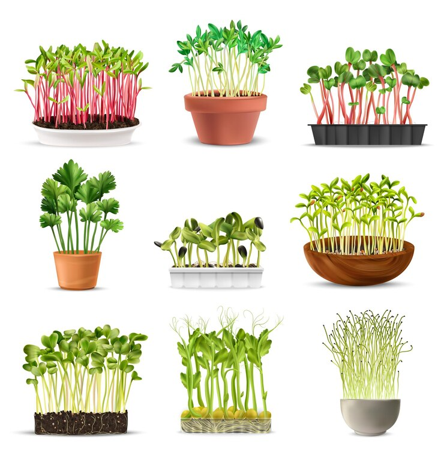

Сделайте ваши блюда вкуснее, полезнее и красивее с нашей микрозеленью
Tiny Leafy Delights — ваш помощник в быстром и полезном питании!

Наши специалисты тщательно подходят к выращиванию разных сортов микрозелени
Чем микрозелень свежее, тем она полезнее!
Практически сразу же после срезки юные растения начинают терять свои свойства; при долгом хранении витамины разрушаются, а сама микрозелень становится менее вкусной.
Чем полезна микрозелень?
Стимулирует работу ЖКТ
Повышает иммунитет
Природный антидепрессант
Способствует похудению
Защищает организм от преждевременного старения
Питание как в ресторане
Вкус у проростков более насыщенный, чем у привычной зелени. Поэтому их аромат используют для улучшения вкуса и цвета различных блюд. Также это готовый гарнир или ингредиент салата..